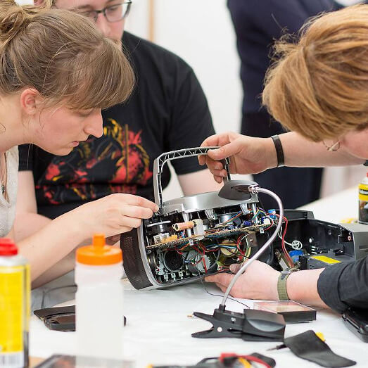

En septembre et octobre, ce ne sont pas moins de 95 objets qui ont été amenés au Repair Café Schaerbeek et comme toujours environ 70% d'entre eux repartent réparés [...]
Publié le 26 avril 2018 à 09h08
Jeter? Pas question!
Réparer ensemble, c'est l'idée des Repair Cafés dont l'entrée est ouverte à tous.
Prochaine session: Dimanche 8 juillet dés 14h
307, rue des Coteaux 1030 Schaerbeek
Outils et matériel sont disponibles à l’endroit où est organisé le Repair Café, pour faire toutes les réparations possibles et imaginables. Vêtements, meubles, appareils électriques, bicyclettes, vaisselle, objets utiles, jouets, et autres. D’autre part sont présents dans le Repair Café des experts bénévoles, qui ont une connaissance et une compétence de la réparation dans toutes sortes de domaines.
On y apporte des objets en mauvais état qu’on a chez soi. Et on se met à l’ouvrage avec les gens du métier. Il y a toujours quelque chose à apprendre au Repair Café. Ceux qui n’ont rien à réparer prennent un café ou un thé, ou aident à réparer un objet appartenant à un autre. On peut aussi toujours y trouver des idées à la table de lecture qui propose des ouvrages sur la réparation et le bricolage.
Il y a des centaines de Repair Cafés partout en Belgique, en France et en Suisse. Vous pouvez visiter un Repair Café près de chez vous, ou pourquoi pas, en organiser un vous-même ! Lisez aussi les règles internes du Repair Café.
Le Repair Café est un endroit où l'on peut venir réparer un objet gratuitement avec l'aide de bénévoles expert en la matière. C'est également un lieu de rencontre et d'échanges entre visiteurs et bénévoles. Notre Repair Café Schaerbeek a été créé en avril 2013 par un groupe de citoyens motivés et intéressés par le concept.
Tout le monde ! Le Repair Café est ouvert à tous, car en plus d'être un endroit où l'on répare, c'est aussi un lieu convivial où l'on peut rencontrer des personnes et apprendre et partager des connaissances.
Notre Repair Café a lieu tous les deuxièmes dimanches du mois, rue des coteaux, de 14 à 18h. Vu le succès de certains ateliers, les inscriptions sont susceptibles d'être clôturées assez tôt. Il y a aussi d'autres Repair Cafés à Bruxelles et en Belgique avec des jours d'ouverture différents.
C'est totalement gratuit ! Les organisateurs et réparateurs du Repair Café sont tous bénévoles. Les quelques frais d'organisation et de gestion sont financés par les dons récoltés durant l'évènement.
Tout aide est toujours la bienvenue pour organiser nos ateliers, consultez notre page de soutien pour voir comment vous pouvez nous aider.
Lors de nos sessions nous avons différents ateliers de réparation pour des objets comme les appareils électriques, les vêtements ou encore les vélos. Vous trouverez plus d'informations sur les différents ateliers sur notre page de conseils pour préparer votre visite.
Il n'est pas possible de savoir à l'avance si un objet est réparable. Les causes d'une même panne pouvant être multiples, seul le bénévole qui vous accueillera sur place pourra, selon ses connaissances, évaluer si l'objet est réparable. Les bénévoles du Repair Café Schaerbeek ne sont pas toujours les mêmes d'une session à l'autre et chacun a son domaine d'expertise. Dans la pratique, une majorité d'objets sont en général réparés lors des sessions. Plus d'information sur les différents ateliers lors de nos session sur notre page de conseils pour préparer votre visite.
Non, le Repair Café ouvre à 14h et les visiteurs sont invités aux tables de réparation dans leur ordre d'arrivée. Les files pouvant parfois êtres longues pour certains ateliers, il nous arrive d'arrêter les inscriptions plus tôt dans l'après-midi.
Le Repair Café ne prévoit pas cela. Tous les réparateurs du Repair Café sont des bénévoles et ne s'engagent que pour la session et ils ne sont également assurés que sur place. L'idée est de réparer ensemble, en équipe, avec les moyens du bord. Les visiteurs sont donc invités à amener leur objet lors d'une session.
Vu le succès du Repair Café, et pour ne pas pénaliser les autres visiteurs, nous n'inscrivons qu'un seul objet par personne à votre arrivée. Mais cela ne vous empêche pas, après votre passage à la table de réparation, de faire une nouvelle fois la file à l'inscription pour inscrire un autre objet.
En septembre et octobre, ce ne sont pas moins de 95 objets qui ont été amenés au Repair Café Schaerbeek et comme toujours environ 70% d'entre eux repartent réparés [...]
Cette session de mai fût beaucoup plus calme que d'habitude, le weekend étant rempli d'activités à Bruxelles, dont plusieurs Repair Café le même jour ! Qu'à cela ne [...]
Notre douzième édition du Repair Café Schaerbeek avait des airs de printemps. Grâce au ciel bleu et aux températures clémentes nous avons pu installer les locaux en mode "été" et [...]
